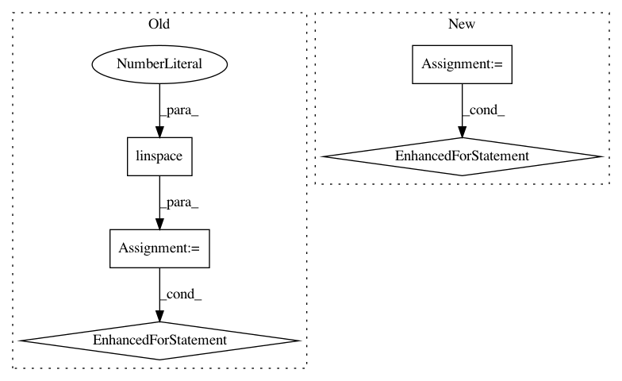

4de234b54989f65a8c383deed7823ebe42abd704,perf_tests/batch_vs_single.py,,,#,13
Before Change
for additional_x_vars in [0, 10, 40]:
// lower percents means more ties.
// original rossi dataset has 0.113
for fraction in np.linspace(0.01, 0.99, 8):
n = n_copies * ROSSI_ROWS
print(n_copies, additional_x_vars, fraction)
df = pd.concat([ROSSI] * n_copies)
n_unique_durations = int(df.shape[0] * fraction) + 1
unique_durations = np.round(np.random.exponential(10, size=n_unique_durations), 5)
df["week"] = np.tile(unique_durations, int(np.ceil(1 / fraction)))[: df.shape[0]]
for i in range(additional_x_vars):
df["%i" % i] = np.random.randn(n)
batch_results = []
for _ in range(3):
cph_batch = CoxPHFitter()
start_time = time()
cph_batch.fit(df, "week", "arrest", batch_mode=True)
batch_results.append(time() - start_time)
single_results = []
for _ in range(3):
cph_single = CoxPHFitter()
start_time = time()
cph_single.fit(df, "week", "arrest", batch_mode=False)
single_results.append(time() - start_time)
batch_time = min(batch_results)
single_time = min(single_results)
print({"batch": batch_time, "single": single_time})
results[(n, fraction, df.shape[1] - 2)] = {"batch": batch_time, "single": single_time}
results = pd.DataFrame(results).T.sort_index()
results = results.reset_index()
results = results.rename(columns={"level_0": "N", "level_1": "frac", "level_2": "N_vars"})
results["ratio"] = results["batch"] / results["single"]
After Change
results = {}
for n_copies, additional_x_vars, fraction in product(
[1, 3, 6, 10, 50, 500, 2500], [0, 10, 20], np.logspace(-6, np.log10(0.99), 8)
):
try:
print(n_copies, additional_x_vars, fraction)
n = n_copies * ROSSI_ROWS
df = pd.concat([ROSSI] * n_copies)
n_unique_durations = int(df.shape[0] * fraction) + 1
unique_durations = np.round(np.random.exponential(10, size=n_unique_durations), 5)
df["week"] = np.tile(unique_durations, int(np.ceil(1 / fraction)))[: df.shape[0]]
for i in range(additional_x_vars):
df["%i" % i] = np.random.randn(n)
batch_results = []
for _ in range(3):
cph_batch = CoxPHFitter()
start_time = time()
cph_batch.fit(df, "week", "arrest", batch_mode=True)
batch_results.append(time() - start_time)
single_results = []
for _ in range(3):
cph_single = CoxPHFitter()
start_time = time()
cph_single.fit(df, "week", "arrest", batch_mode=False)
single_results.append(time() - start_time)
batch_time = min(batch_results)
single_time = min(single_results)
print({"batch": batch_time, "single": single_time})
results[(n, fraction, df.shape[1] - 2)] = {"batch": batch_time, "single": single_time}
except KeyboardInterrupt:
break
results = pd.DataFrame(results).T.sort_index()
results = results.reset_index()
results = results.rename(columns={"level_0": "N", "level_1": "frac", "level_2": "N_vars"})
results["ratio"] = results["batch"] / results["single"]
In pattern: SUPERPATTERN
Frequency: 3
Non-data size: 5
Instances
Project Name: CamDavidsonPilon/lifelines
Commit Name: 4de234b54989f65a8c383deed7823ebe42abd704
Time: 2020-07-09
Author: cam.davidson.pilon@gmail.com
File Name: perf_tests/batch_vs_single.py
Class Name:
Method Name:
Project Name: has2k1/plotnine
Commit Name: f91ee4a6cdeb4548d0e71ab42dae101166eedaf4
Time: 2014-02-27
Author: greg@yhatHQ.com
File Name: ggplot/components/colors.py
Class Name:
Method Name: color_gen
Project Name: deepchem/deepchem
Commit Name: 5273d873b9154ad706bfdfcf4fc8e2354fd425c0
Time: 2016-01-16
Author: bharath.ramsundar@gmail.com
File Name: deepchem/models/__init__.py
Class Name: Model
Method Name: predict